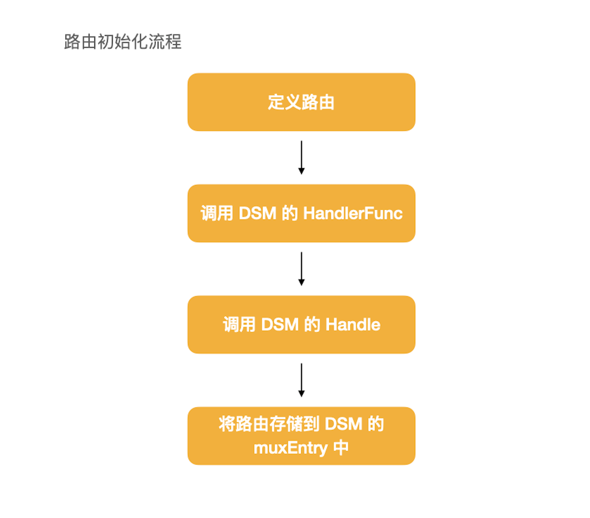
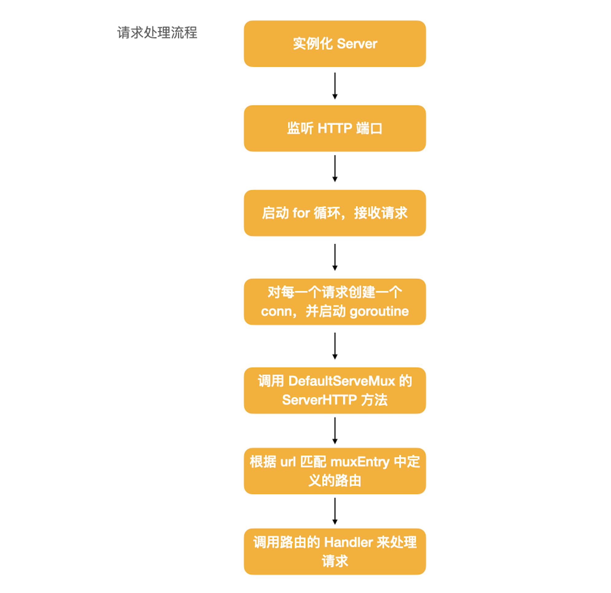

ServeMux 详解
在 Go 语言中，创建一个 HTTP 服务很简单，只需要几行代码就可以创建一个可用的 HTTP 服务，这是因为 Go 原生帮我们实现了一个默认的 HTTP 服务，就是 ServeMux，在这篇文章中，我们来详细看一下 ServeMux 的具体实现。
1. 创建一个 HTTP 服务
在 Go 语言中，创建一个 HTTP 服务只需要写下面几行代码就可以了。
func main() {
http.HandleFunc("/index", func(writer http.ResponseWriter, request *http.Request) {
writer.Write([]byte("Hello go web"))
})
http.ListenAndServe(":8080", nil)
}
我们定义了一个路由，然后启动 HTTP 服务，就可以在浏览器中通过 http://127.0.0.1:8080/index 来访问服务，服务端会返回 Hello go web。
这样，一个简单的 HTTP 服务就创建完成了。
2. HTTP 服务如何运行
上面的代码有两部分，一部分是定义 HTTP 服务的路由，在服务启动之后，我们访问相应的路由，就能得到服务端的响应。
在 http 包中，有一个接口 http.Handler ，这个接口是 HTTP 服务的核心：
type Handler interface {
ServeHTTP(ResponseWriter, *Request)
}
对于 HTTP 服务来说，一定发起请求的客服端和处理请求的服务端，客户端发起一个请求，然后服务端给出相应的输出。这个 Handler 接口就把这个整个过程抽象为 ServeHTTP 方法。ResponseWriter 表示服务端的输出，Request 表示来自客户端的请求。
在 http 包中提供了一个 Handler 的实现 ServeMux，这个Handler 做的事情也很简单，就是来维护 URL 和 Handler 之间的关系，根据 URL 判断应该把请求转发到哪个 Handler，没错这里的 Handler 也是 http.Handler，是同一个接口。用 http.Handler 来管理 http.Handler，我觉得这是一个非常优雅的设计。
2.1 定义路由
路由可以使用两种方式来定义，一种是实现 Handler，还有一种是使用 HandleFunc，这两个概念在上一篇文章中我们已经详细讨论过了，这里就不多说。
示例代码中的路由使用 HandleFunc 来定义，这里我们来看一下路由具体是如何被定义的。我们进入 HandleFunc 的源码：
// server.go
func HandleFunc(pattern string, handler func(ResponseWriter, *Request)) {
DefaultServeMux.HandleFunc(pattern, handler)
}
发现实际上是调用了 DefaultServerMux 的 HandleFunc 方法，DefaultServerMux 实际上就是 ServeMux，是 Go 的 HTTP 服务的默认实现。然后 DefaultServerMux 调用 Handle 方法来处理路由：
// server.go
func (mux *ServeMux) Handle(pattern string, handler Handler) {
mux.mu.Lock()
defer mux.mu.Unlock()
if pattern == "" {
panic("http: invalid pattern")
}
if handler == nil {
panic("http: nil handler")
}
if _, exist := mux.m[pattern]; exist {
panic("http: multiple registrations for " + pattern)
}
if mux.m == nil {
mux.m = make(map[string]muxEntry)
}
e := muxEntry{h: handler, pattern: pattern}
mux.m[pattern] = e
if pattern[len(pattern)-1] == '/' {
mux.es = appendSorted(mux.es, e)
}
if pattern[0] != '/' {
mux.hosts = true
}
}
路由由两部分组成，一个是匹配 HTTP url 的 pattern，每个pattern 都代表着一类 HTTP 请求，都需要一个对应的 handler 来处理。
DefaultServerMux 的 Handle 方法其实就做了一件事，在判断路由和对应的 handler 实现都没问题，并且该路由没有重复定义之后，就把这些路由都存到 map 中。所以 HTTP 服务的路由表其实就是一个 map。
完整流程如下，DefaultServerMux 简称为 DSM ：

2.2 启动 HTTP 服务
路由定义完成之后，就需要启动服务了，就是下面这行代码:
http.ListenAndServe(":8080", nil)
通常，第二个参数都会设置为 nil，设置为 nil 的时候，就会使用 Go 语言默认的 HTTP 服务实现。我们跟进代码的实现：
// server.go
func ListenAndServe(addr string, handler Handler) error {
server := &Server{Addr: addr, Handler: handler}
return server.ListenAndServe()
}
默认情况下，会创建一个 Server，Server 就是表示一个服务端， 其中定义了运行一个 HTTP 服务所需要的全部参数以及必要的方法，如果不给 Server 传入参数 ，那么 Server 就使用默认的参数运行。
type Server struct {
// 服务端的 host 和 端口号
Addr string
Handler Handler // 默认为 ServeMux
// 省略其他参数
}
然后 server 会调用 ListenAndServe 来启动端口监听和请求接收，使用 net.Listen 来启动监听端口：
// server.go
func (srv *Server) ListenAndServe() error {
if srv.shuttingDown() {
return ErrServerClosed
}
addr := srv.Addr
if addr == "" {
addr = ":http"
}
ln, err := net.Listen("tcp", addr)
if err != nil {
return err
}
return srv.Serve(ln)
}
然后调用 Server 的 Serve 方法来接收请求和处理请求。在 Serve 方法中，最关键的是下面这段代码，这里是一个 for 循环，没有结束条件，除非发生错误或者主动结束服务，否则会一直处在接收请求的状态。
// server.go#Serve
for {
rw, err := l.Accept()
if err != nil {
select {
case <-srv.getDoneChan():
return ErrServerClosed
default:
}
//......
return err
}
connCtx := ctx
if cc := srv.ConnContext; cc != nil {
connCtx = cc(connCtx, rw)
if connCtx == nil {
panic("ConnContext returned nil")
}
}
tempDelay = 0
c := srv.newConn(rw)
c.setState(c.rwc, StateNew) // before Serve can return
go c.serve(connCtx)
}
接收到请之后，会为每一个请求创建一个 conn 实例，conn 表示服务端的一个 HTTP 连接，并启动一个新的 goroutine 来处理这个请求。
然后就进入到 conn 的 serve 方法。
因为在一个 HTTP 请求中，有可能会出现多次请求的收发，所以这里依然启动了 for 的循环来接收请求数据。
for {
w, err := c.readRequest(ctx)
if c.r.remain != c.server.initialReadLimitSize() {
// If we read any bytes off the wire, we're active.
c.setState(c.rwc, StateActive)
}
// .. 去掉无关代码
serverHandler{c.server}.ServeHTTP(w, w.req)
// .. 去掉无关代码
}
在 conn 的 serve 方法中，其实就只做了两件事，一件事读取请求中的数据。然后是调用 ServeHTTP 方法，进入到 ServeHTTP 方法中：
// server.go
func (sh serverHandler) ServeHTTP(rw ResponseWriter, req *Request) {
handler := sh.srv.Handler
if handler == nil {
handler = DefaultServeMux
}
if req.RequestURI == "*" && req.Method == "OPTIONS" {
handler = globalOptionsHandler{}
}
handler.ServeHTTP(rw, req)
}
判断 handler 是否为 nil，如果为 nil，然后就直接使用 DefaultServeMux 的 ServeHTTP 方法来处理 HTTP 请求。
// server.go
func (mux *ServeMux) ServeHTTP(w ResponseWriter, r *Request) {
if r.RequestURI == "*" {
if r.ProtoAtLeast(1, 1) {
w.Header().Set("Connection", "close")
}
w.WriteHeader(StatusBadRequest)
return
}
h, _ := mux.Handler(r)
h.ServeHTTP(w, r)
}
我们发现其实这个方法也只做了一件事，就是去上面路由表 muxEntry 中匹配路由，然后使用路由 的 Handler 调用 ServerHTTP 来真正的处理请求。
完整的流程如下：

3. 小结
Go 服务默认的 HTTP 处理流程其实不难理解，最难的地方在于满屏都是 Handler 接口和 ServeHTTP 方法，理解 Handler 接口是理解整个流程的关键。
所有的 HTTP 请求都需要经过 ServeHTTP 方法处理。而 Go 语言中的 ServeMux 实现了 Handler 接口，通过 url 找到对应的路由，然后在 ServeHTTP 中调用路由实现的 ServeHTTP 方法去真正处理对应的请求。
Go 语言对 HTTP 服务的抽象非常好，通过一个接口就把整个流程串起来了。
文 / Rayjun